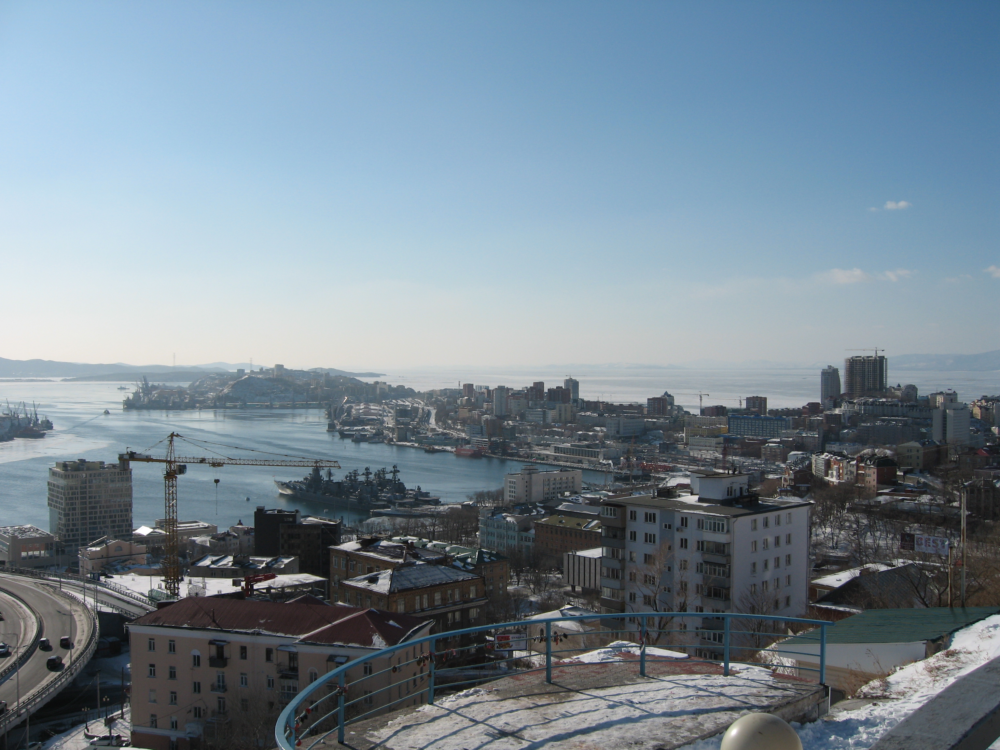

Тема галереи: Мой город в разных ракурсах и настроениях
| Фотография |
Описание |
 |
Закат над морем. Корабль и чайка — символы вечности и свободы. |
 |
Зимний город с высоты. Снег, море и краны — жизнь продолжается даже в холод. |
 |
Ночной город отражается в воде. Огни — как звёзды, только ближе. |
 |
Мост в синеве зимнего неба. Путь, соединяющий берега и времена года. |
 |
Широкий взгляд на мост и город. Архитектура, инженерия и природа в одном кадре. |
 |
Ночной водопад, озарённый зелёным светом. Природа и искусство в одном кадре. |
|  |
Панорама города без моста. Улицы, дома, порт — всё на ладони. |
 |
Дым над городом — признак жизни. Промышленность, тепло, история. |
 |
Танкер плывёт по замерзшему морю. Мост — вдалеке, как будто охраняющий вход в город. |